Introduction
Ce rapport accompagne le relevé d'audit effectué sur le site « Ville de Luxembourg ».
La méthodologie d'audit employée repose sur le référentiel RGAA 4, consultable à l'adresse suivante : https://accessibilite.public.lu/fr/rgaa4/criteres.html
L'audit a été réalisé au moyen de l'utilisation de navigateurs web et d'outils spécialisés. Des tests de restitution ont également été effectués conformément à la base de référence définie par le RGAA 4.
Échantillon
L'audit a porté sur un échantillon de 15 pages pour le niveau double A (AA) :
Environnement de test (base de référence)
Quelques critères RGAA, notamment ceux de la thématique JavaScript, incluent des tests de restitution à effectuer sur des technologies d'assistance associées à des navigateurs et des systèmes d'exploitation. Pour qu'un dispositif HTML / WAI-ARIA ou son alternative soit considéré comme compatible avec l'accessibilité, il faut qu'il soit pleinement fonctionnel, en termes de restitution et de fonctionnalités sur certaines combinaisons. Vous trouverez une explication détaillée de cet environnement de tests dans le document du RGAA 4.
Nous détaillons ci-dessous la base de référence utilisée pour réaliser les tests de restitution des composants du site.
Environnement de test – ordinateur
| Technologie d'assistance | Navigateur |
|---|---|
| NVDA 2020.3 | Firefox 84 |
| JAWS 2019 | Firefox 84 |
| VoiceOver | Safari 14 |
Environnement de test — mobile
| Système d'exploitation | Technologie d'assistance | Navigateur |
|---|---|---|
| Android 11 | TalkBack (dernière version) | Chrome 87 |
Accessibilité des pages auditées
Le site présente un niveau général d'accessibilité faible.
Le niveau moyen de conformité relevé atteint 38% de conformité sur l’ensemble des pages auditées, avec 38.78 % de conformité au niveau simple A (A) et 36.84% de conformité au niveau double A (AA).
Le site est non conforme.
Conformité RGAA 4 du site
| Conforme | Non conforme | |
|---|---|---|
| A | 38.78 % | 61.22 % |
| AA (légal) | 38.24 % | 61.76 % |
Note sur le calcul de conformité
La conformité globale (Tableau « Conformité RGAA 4 ») est calculée de la manière suivante : C / (C+NC). C est le nombre de critères conformes et NC le nombre de critères non conformes.
C'est ce nombre qui constitue la référence légale. Il représente le taux de conformité de l'échantillon.
Il est normal que le taux de conformité global diffère sensiblement du taux de conformité par page. En effet, un critère NC (non conforme) sur une page rend le critère non conforme sur l'ensemble de l'échantillon.
Pour qu'un site soit conforme (100 % des critères applicables sont conformes au niveau AA), il est nécessaire que le taux de conformité par page équivaille à 100 %.
Impacts utilisateurs
Les principales personnes impactées sont les personnes aveugles et celles qui naviguent au clavier. Les problèmes liés à la structuration des contenus (listes, titres, images) et aux scripts, à l’API ARIA et aux formulaires rendent parfois difficile l’utilisation du site par ces utilisateurs.
Contenus dérogés
La dérogation est un moyen d'exclure du champ d'application du référentiel des contenus particuliers. Les cas de dérogations sont très encadrés, vous en trouverez le détail dans le guide des dérogations.
Les contenus suivants n'entrent pas dans le calcul de la conformité ni dans le périmètre des éléments à rendre accessible, ils sont dérogés :
- Le service ReadSpeaker disponible dans toutes les pages intérieures (motif : service tiers non développé par l’entité).
- Les documents bureautiques en téléchargement, notamment ceux disponibles depuis la page Media Center, mais de manière générale tous les documents bureautiques disponibles sur le site, sous la responsabilité de l’entité et publiés avant le 23 septembre 2018 (motif : contenus exemptés de l’obligation d’accessibilité).
- Les contrastes de couleurs utilisés pour les logos des lignes de bus : ces couleurs répondent à une charte graphique plus globale utilisée sur le mobilier urbain et la communication générale de la Ville de Luxembourg. Néanmoins la Ville de Luxembourg réfléchit à un moyen pour rendre ces informations pleinement accessibles.
Droit à la compensation
Les dérogations émises notamment pour charge disproportionnée demandent en contrepartie la mise en place d'un moyen de compensation pour les utilisateurs. Pour les documents bureautiques par exemple, vous devez fournir un moyen à l'utilisateur de demander une version accessible d'un document s'il en a besoin. Cela peut être un mail ou un formulaire contact.
Note sur le relevé des non-conformités
Ne sont cités dans ce rapport que quelques exemples issus du relevé des non-conformités.
De plus, toutes les occurrences d'une non-conformité ne sont pas listées dans le relevé. Par exemple : pour les contrastes de couleurs des textes et des composants d’interface, le relevé mentionne quelques occurrences, mais ne les cite pas tous.
Avis
[Rédiger un avis concis]
Les non-conformités les plus bloquantes pour les utilisateurs concernent :
- La hiérarchie des titres (de nombreux titres sont absents des pages, ce qui est un frein à l’exploration des pages par les utilisateurs aveugles).
- La structuration des listes (de nombreux ensemble de liens ne sont pas structurés dans des listes, comme les grands ensembles de liens des lignes de bus).
- Le site comporte de nombreuses images de décoration, mais elles ont presque toutes une alternative renseignée, ce qui ajoute du contenu inutile pour les utilisateurs de lecteurs d’écran.
- Les scripts sont également problématiques (utilisation de fenêtres modales non compatibles avec les technologies d’assistance par exemple).
Ce sont donc ces points qui devront nécessiter une attention toute particulière et qui demanderont le plus d'efforts.
Annexe technique
Images
Recommandation
Donner à chaque image porteuse d'information une alternative textuelle pertinente et une description détaillée si nécessaire. Lier les légendes à leurs images. Remplacer les images textes par du texte stylé lorsque c'est possible.
Images de décoration
Le site contient des images de décoration qui ne sont pas correctement identifiées, soit parce qu'elles ont une alternative renseignée soit parce qu'il manque les attributs nécessaires pour qu'elles soient ignorées par les technologies d'assistance.
Ces images n'apportent aucune information et peuvent causer des problèmes de compréhension pour les aveugles et les grands malvoyants qui vont écouter les contenus avec un lecteur d'écran.
- Dans le cas d'une image insérée avec la balise
img, mettre unalt="". - Dans le cas d'une image insérée avec la balise
svg, mettre une propriété ARIAaria-hidden="true".
Constats sur le site
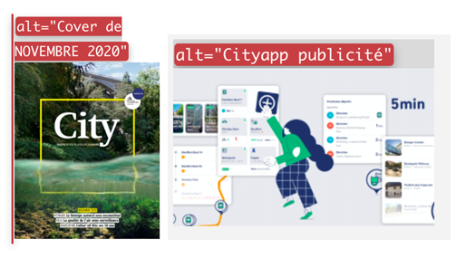Sur la page d’accueil, l’image du magazine « City » ou encore les images présentes dans les articles du bloc des actualités sont des images de décoration (le texte adjacent fournit déjà l’information), mais elles possèdent toutes une alternative renseignée.
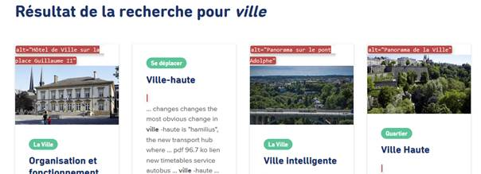Les images présentes dans les articles de la page de résultat de recherche ont toutes une alternative renseignée.
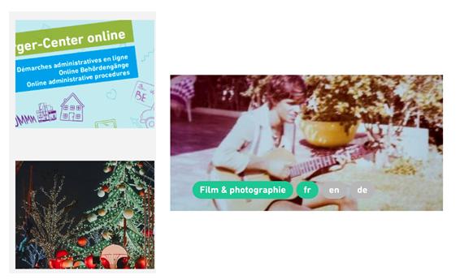Certaines images n'ont pas de alt="", c’est le cas par exemple pour les images présentes dans les blocs d’actualités et d’agenda de la page Contact, ou encore dans la page Agenda. Même si elles sont décoratives, les images doivent avoir un attribut alt vide, ceci afin que les technologies d’assistance les ignorent complètement.
On trouve un certain nombre d’images vectorielles (<svg>) qui sont purement décoratives (par exemple l’icône de bus dans le bloc « Infos trafic » de la page d’accueil, ou encore les icônes accompagnant les liens du bloc « plus » ou « La ville à votre service ». Ces images n’étant pas correctement identifiées, un utilisateur aveugle qui navigue avec un lecteur d’écran va accéder à ces images alors qu’elles ne servent pas le propos de la page.
Les images dans les items des résultats de la recherche (dans la fenêtre modale) sont des images de décoration, mais elles possèdent toutes une alternative textuelle (définie dans l’attribut alt).
Images porteuses d'information complexe
Certaines images porteuses d'informations sont complexes et nécessitent une description détaillée, pertinente, structurée et adjacente à l'image afin de permettre aux personnes ne percevant pas les images (comme les personnes aveugles), ou ayant des difficultés à les comprendre lorsqu'elles contiennent du texte (personnes ayant des difficultés de lecture, comme les dyslexiques par exemple) d'accéder à l'information.
Il sera possible e masquer cette description et de prévoir un bouton permettant à l'utilisateur de l'afficher si besoin (par exemple : « Afficher la description de l'image »). Voir un exemple de ce mécanisme. Il est également possible de proposer un lien adjacent à l'image vers la description détaillée.
Constats sur le site
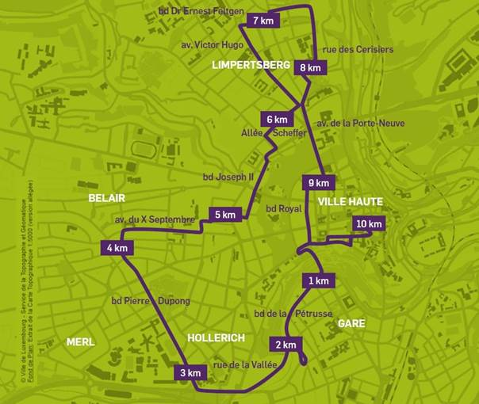Dans la page Promenade à vélo, on rencontre une image qui contient de l’information qui n’est pas rendue disponible par ailleurs dans le contexte adjacent. Elle décrit un parcours de vélo en nommant les rues et les quartiers traversés ainsi que les distances de chaque tronçon.
Images textes
Lorsque des images textes peuvent être reproduites en HTML et CSS, vous ne devez pas utiliser d'images.
Les textes doivent être réalisés en HTML et CSS afin de permettre aux utilisateurs qui en ont besoin d'adapter leur lisibilité (agrandissement des caractères, modification des couleurs, des polices…).
Il est également possible de conserver les images textes et de fournir à l'utilisateur un mécanisme de remplacement qui lui permet, avec un bouton par exemple, de remplacer toutes les images textes en textes stylés.
Constats sur le site
Dans certaines pages, en bas de contenu, on rencontre une zone promotionnelle avec des liens images, dont les images comportent du texte. Pour certaines images, la mise en forme particulière (texte en biais par exemple) ne peut pas être réalisée en CSS/HTML, mais pour d’autres comme l’image de promotion de l’application, le texte peut être reproduit simplement en HTML/CSS.
Cadres
L'absence d'identification des cadres peut poser un problème de repérage dans la structure de la page ou de compréhension des contenus pour les personnes aveugles.
Constats sur le site
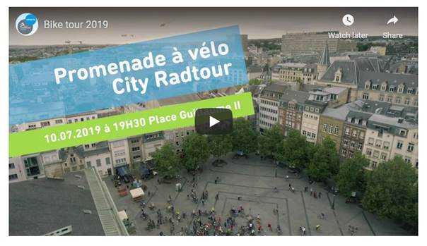Dans la page Promenade à vélo, la vidéo de présentation est intégrée dans un cadre qui ne possède pas de titre.
Couleurs
Recommandation
Ne pas donner l'information uniquement par la couleur et utiliser des contrastes de couleurs suffisamment élevés pour les textes et les composants d'interface.
Contrastes des textes
Plusieurs couleurs présentent un rapport de contraste insuffisant, ce qui peut poser problème aux grands malvoyants et aux déficients visuels qui ont des difficultés à percevoir les couleurs ou les contrastes.
Rapports de contrastes définis par le RGAA
- Pour les textes qui ont une taille de police calculée inférieure à 24px sans effet de graisse ou une taille de police calculée inférieure à 18,5px avec effet de graisse, le rapport de contraste entre la couleur du texte (y compris le texte en image) et son arrière-plan doit être de 4.5:1, au moins.
- Pour les textes qui ont une taille de police calculée supérieure ou égale à 24px sans effet de graisse ou une taille de police calculée supérieure ou égale de 18,5px avec effet de graisse, le rapport de contraste entre la couleur du texte (y compris le texte en image) et son arrière-plan doit être de 3:1, au moins.
Vous pouvez foncer les couleurs pour obtenir le rapport de contraste exigé.
Si la charte graphique ne peut être modifiée, fournissez une méthode aux utilisateurs pour consulter le site avec des contrastes suffisants. Ceci peut être réalisé simplement avec une fonctionnalité JavaScript et une surcharge CSS des couleurs.
Vous pouvez voir un exemple de ce type de mécanisme sur le site sncf.com. Dans les réglages d'accessibilité, vous trouverez une option qui permet d'afficher le site avec des contrastes renforcés et inversés.
Constats sur le site
Dans chaque page du site, de nombreux contrastes entre la couleur de texte et la couleur de fond ne sont pas suffisants.
Les liens en blanc (tous les liens d’en-tête du site) sur un fond composite ne sont pas suffisamment contrastés.
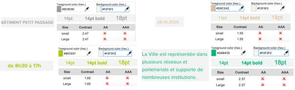Un certain nombre de couples de couleurs n’ont pas un rapport de contraste suffisant. C’est par exemple le cas des couleurs utilisées sur un fond gris (#F2F3B2) : le gris foncé (#9c9c9c, ratio de 2.47), le vert pomme (#b0c831, ratio de 1.69), le marron clair (#d9c2a2, ratio de 1.55), le vert (#34b47d, ratio de 2.37).

Le vert (#34b47D) utilisé avec le bleu foncé (#283d55) a également un rapport de contraste insuffisant (4.22).
De nombreuses autres couples de couleurs sont en défaut sur le site.
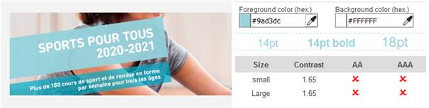On trouve d’autres cas de contraste en défaut dans les images textes porteuses d’information. Par exemple, sur la page Contact, on trouve des liens images avec des textes en images. L’image « Sports pour tous » emploie par exemple une couleur de fond verte (#9ad3dc) avec une police blanche qui aboutit à un ratio de 1.65.
Contraste des composants d'interface
Les composants d'interface, les illustrations porteuses d'information ou encore les mises en couleurs porteuses d'information doivent être suffisamment contrastés pour être perçus par les utilisateurs ayant des troubles de perception des couleurs. Par exemple, une icône porteuse d'information devra avoir un rapport de contraste avec la couleur de fond de 3. De même, pour un champ de saisie de formulaire, dont la zone active est matérialisée par sa bordure, alors la couleur de cette bordure devra avoir un rapport de contraste de 3 avec la couleur de fond de la page.
Constats sur le site
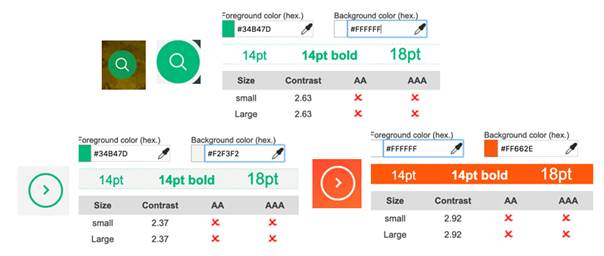De nombreux composants sont difficilement perceptibles sur l’interface. Par exemple, les icônes qui identifient les composants de recherche (loupe), en blanc (#fff) sur un fond vert (#34b47d) ont un rapport de 2.63.
On rencontre un problème similaire avec les chevrons « suivant » « précédent » (utilisés dans les composants des carrousels ou dans les éléments de pagination), dont le rapport de contraste n’est pas suffisant pour qu’un utilisateur qui a des troubles de la perception des couleurs puisse les percevoir. Par exemple, les composants de carrousel vert (#34b47d) sur fond gris (#f2f3f2) ont un rapport de contraste de 2.37, et les composants blancs sur fond orange (#ff662e) ont un rapport de contraste de 2.92.
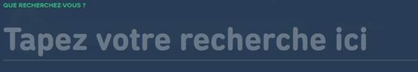Le champ de recherche, présent dans la modale de recherche, est difficilement perceptible également.
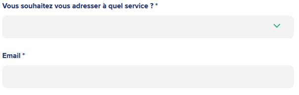Le contraste des champs de formulaire, comme dans la page Contact par exemple, est insuffisant. En effet, le gris (#f3f3f3) sur un fond blanc donne un ratio de 1.11, ce qui rend les zones d’interaction presque imperceptibles.
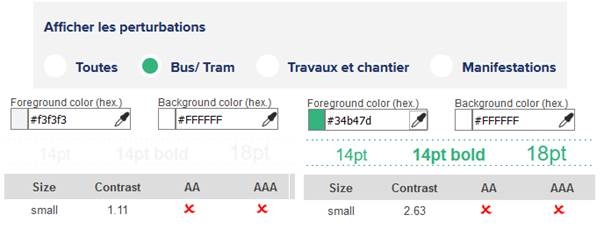Les boutons radio, présents dans la page Trafic Info par exemple, présentent de nombreux problèmes de contrastes. Les boutons non sélectionnés ne sont pas suffisamment perceptibles (blanc/gris : ratio1,11), mais l’état sélectionné est également peu perceptible (vert/blanc, ratio 2,63). Enfin, la différence entre la couleur de l’état sélectionné (vert) et non sélectionné (blanc) n’est pas suffisamment perceptible.
Information par la couleur
Lorsqu'une information est donnée par la couleur, il faut qu'elle soit également véhiculée par une autre méthode, par exemple par un texte qui donne la même information, pour être perçue par les utilisateurs aveugles.
Il faut également donner un indice visuel autre que la couleur, afin de répondre aux besoins des personnes déficientes visuelles (les daltoniens par exemple). Il peut s'agir d'un symbole, d'une texture, de chiffres.
Constats sur le site
La langue sélectionnée dans le menu de langue est mise en évidence par la couleur uniquement. Un utilisateur aveugle n’aura pas accès à cette information.
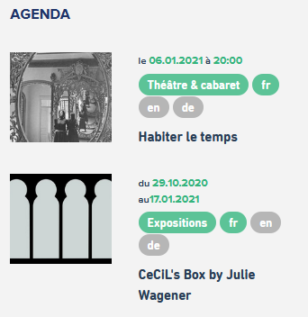Dans les blocs d’événements, par exemple en bas de la page Contact, les langues disponibles sont indiquées uniquement grâce à la couleur, elles ont un fond vert. Cette information n’est pas disponible pour un utilisateur aveugle qui ne perçoit pas les couleurs, ni pour un utilisateur voyant avec des troubles de la perception des couleurs qui ne pourra pas distinguer la différence entre les deux états disponibles/non disponibles (vert/gris).
Tableaux
Recommandation :
Donner un résumé à chaque tableau de données complexe, s'assurer que pour chaque tableau de données ayant un titre, ce titre est pertinent, identifier clairement les cellules d'en-tête, utiliser un mécanisme pertinent pour lier les cellules de données aux cellules d'en-tête. Pour chaque tableau de mise en forme, veiller à sa bonne linéarisation.
Tableau de données
Un tableau de données doit répondre à certains enjeux pour être exploité correctement par les lecteurs d'écran. Les enjeux sont les suivants :
- Le tableau doit posséder un titre permettant de l'identifier (
<caption>) ; - Les en-têtes doivent être identifiés (balises
<th>) et doivent pouvoir être restitués lorsque l'utilisateur parcourt chaque cellule à l'aide de son lecteur d'écran (attributsscopesi nécessaire).
Constats sur le site
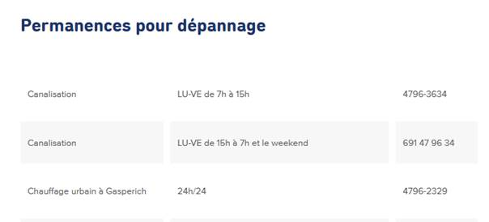Dans la page Contact, on rencontre des tableaux de données sans titre relié, pourtant ils possèdent visuellement tous un titre visible. De plus, aucune des lignes n’a d’en-têtes déclarés. La première cellule de chaque ligne pourrait être considérée comme un en-tête. On retrouve des tableaux similaires avec les mêmes erreurs dans la page Vacances et congés scolaires.
Liens
Recommandation :
Donner des intitulés de lien explicites, grâce à des informations de contexte notamment, utiliser le titre de lien le moins possible. S'assurer que le nom visible est contenu dans le nom accessible.
Pertinence des intitulés
Un lien possède généralement un intitulé et un contexte. L'intitulé est le texte présent dans la balise <a> (ou la valeur de l'attribut alt de l'image dans le cas d'un lien-image) et le contexte du lien est représenté par le titre qui précède, le titre du lien (l'infobulle) ou tout simplement le texte dans lequel il est inséré.
Pour être considéré comme pertinent, l'intitulé d'un lien doit permettre de comprendre sa destination en prenant en compte son contexte.
Constats sur le site
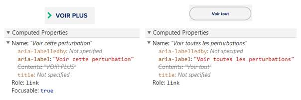Dans le bloc « Infos Trafic » de la page d’accueil, les liens « Voir plus » et « Voir tout » ont un nom accessible, constitué par la propriété aria-label, qui ne reprend pas exactement l'intitulé visible du lien. « Voir plus » est le nom visible et le nom accessible est « Voir cette perturbation », il ne reprend pas « Voir plus ». Pour le lien « voir tout », le nom accessible est « Voir toutes les perturbations » et le nom visible « voir tout » n’est pas exactement repris dans le nom accessible. Ce sont les utilisateurs de commande vocale qui sont ici le plus impactés. Les utilisateurs qui naviguent à la voix se reposent sur l’intitulé visible pour déclencher les événements associés aux éléments. Si cet intitulé visible est différent du nom utilisé par les technologies d’assistance (le nom accessible), les utilisateurs de commande vocale peuvent échouer à activer les éléments. Il faut que le nom accessible contienne au moins l’intitulé visible (dans son intégralité).
On retrouve une problématique similaire avec le lien « Abonnez-vous à notre chaîne YouTube » dont le nom accessible « Lien vers le compte YouTube de la Ville de Luxembourg », constitué par la propriété aria-label, ne reprend pas l‘intitulé visible.
Liens-images
Un lien-image est un lien dont le contenu n'est composé que d'une ou plusieurs images (balises <img>). Généralement, ces liens ne posent aucun problème aux utilisateurs voyants qui parviennent à comprendre la destination du lien grâce à l'image et son contexte. En revanche, pour une personne aveugle, ces liens doivent obligatoirement posséder un intitulé.
L'intitulé d'un lien-image est généré grâce à l'alternative de l'image contenue dans ce lien.
Constats sur le site
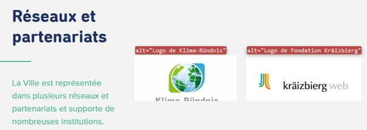Sur la page d’accueil, les liens images du bloc « Réseaux et partenariats » ont des intitulés non pertinents. Leur intitulé est formé par l’alternative de l’image qui indique à chaque fois « logo de ». Pour ces liens, il faut supprimer les occurrences « logo de » dans les alternatives des images.
Titres de liens (infobulles)
La restitution des titres de liens (attribut title sur une balise) dépend fortement des lecteurs d'écran et des préférences utilisateurs. Ainsi, l'utilisation de ces infobulles doit être limitée aux cas où l'infobulle apporte de l'information supplémentaire par rapport à l'intitulé du lien. De plus, cette infobulle doit reprendre au moins l'intitulé du lien pour être considéré comme conforme.
Constats sur le site
Liens identiques
Si deux liens ont le même intitulé et le même contexte, il s'agit alors de deux liens identiques. Dans ce cas, ces deux liens doivent impérativement renvoyer vers la même page. En effet, pour un utilisateur qui n'a pas une perception globale de la page (utilisateur aveugle par exemple), deux liens avec le même intitulé mènent vers la même page, il peut alors perdre de l'information.
Constats sur le site
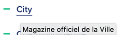En pied de page, le lien « City » a un title
« Magazine officiel de la Ville » qui ne reprend pas l'intitulé
visible du lien « City ».
Scripts
Recommandation :
Donner si nécessaire à chaque script une alternative pertinente. Rendre possible le contrôle de chaque code script au moins par le clavier et la souris et s'assurer de leur compatibilité avec les technologies d'assistance. Identifier les messages de statut lorsque c'est nécessaire.
Utilisation des boutons et des liens
Pour les aveugles et les grands malvoyants qui utilisent un lecteur d'écran, ce manque de distinction claire entre les liens et les boutons peut poser de graves problèmes.
Ainsi, un bouton implémenté sous la forme d'un lien qui déclenche une action de la page, risque de perturber l'utilisateur qui s'attendra au chargement d'une nouvelle page.
De manière générale, les liens devraient être réservés à l'affichage d'une nouvelle page ou la création de liens d'accès rapide dans le contenu. Dans tous les autres cas, l'emploi d'un bouton d'action est plus pertinent.
Enfin, chaque bouton doit avoir un nom accessible défini, soit par l'intermédiaire d'un texte (visible ou positionné hors écran) ou d'une propriété title, aria-label ou aria-labelledby.
Constats sur le site
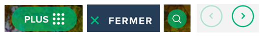Le composant « plus » qui permet d’afficher la navigation par thèmes et profils, les composants « fermer » ainsi que les éléments de navigation dans les carrousels implémentent le motif ARIA button, mais de manière partielle. En effet, ils ne peuvent pas être activés avec la touche Espace.
Le composant « Loupe » qui permet d’afficher la modale de recherche, n’est quant à lui activable ni avec la touche Entrée ni la touche Espace, un utilisateur naviguant exclusivement au clavier ne pourra jamais afficher cette modale de recherche.
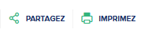Certains composants des pages de contenus déclenchent des événements dans la page et devraient être des boutons au lieu de liens.
Utilisation inappropriée de propriétés ARIA
Les propriétés ARIA sont chargées de transmettre des informations indispensables à la restitution et l'utilisation des composants développés avec JavaScript aux technologies d'assistance. Une utilisation inappropriée peut poser des problèmes de restitution notamment.
Constats sur le site
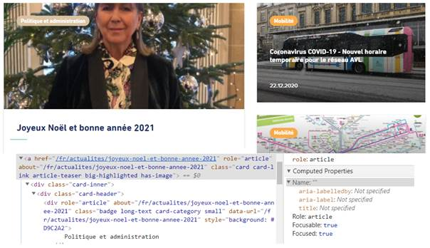Sur la page d’accueil, dans les pages « Actualités » et « Trafic Info », des liens possèdent le role="article". Il s’agit d’un problème majeur puisque la définition de ce rôle « article » vient remplacer celui de « lien ». On retrouve ce défaut sur de nombreux éléments dans de nombreuses pages du site.
Ainsi, lorsque les utilisateurs de lecteurs d’écran atteindront ces éléments, ils auront accès à une fausse information, la nature de l’élément sera « article » et non pas « lien ». Savoir qu’il s’agit d’un lien permet de savoir que des actions sont possibles sur l’élément (activer le composant avec Entrée par exemple). Si cette information n’est pas disponible, un utilisateur aveugle n’activera pas l’élément et n’accédera donc pas au contenu associé.
Fenêtres modales
Constats sur le site
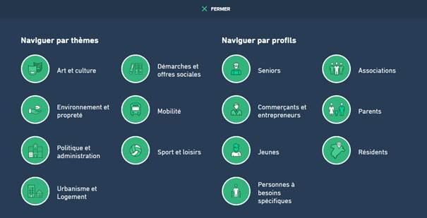Le contenu du composant « Plus » implémente partiellement le motif ARIA Dialog. Il manque un titre à la fenêtre modale et les interactions au clavier ne sont pas toutes respectées (par exemple, le focus n’est pas capturé).
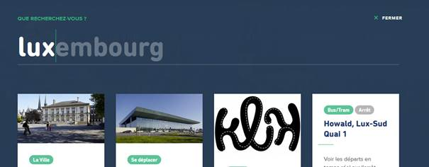La modale de recherche quant à elle n’implémente pas du tout le motif ARIA Dialog alors qu’elle en a tout le comportement et l’apparence.
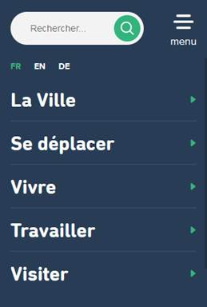Le menu de navigation en version mobile se présente comme une fenêtre modale, mais n’implémente pas le motif ARIA Dialog. De plus, on constate de nombreuses problématiques dans ce menu de navigation : la navigation au clavier n’est pas cohérente entre les éléments, les composants de retour ne sont pas atteignables au clavier, l’ensemble des composants du menu reste accessible aux technologies d’assistance, mais lorsqu’il est visuellement masqué.
Le menu de navigation en version mobile devra recevoir une attention particulière afin de corriger tous les problèmes de navigation qui le rendent difficilement utilisable au clavier.
Gestion de la visibilité de zones
Le site possède des fonctionnalités d'affichage ou de masquage des zones de contenus. L'état affiché/masqué du contenu additionnel doit pouvoir être disponible pour les technologies d'assistance afin que les utilisateurs aveugles accèdent à cet état.
Pour ce type d’élément, l’implémentation du motif ARIA Disclosure est recommandé.
Constats sur le site
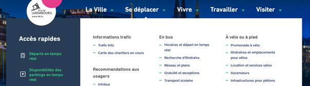Le menu de navigation possède des sous-menus pour chaque entrée de premier niveau. Les entrées de premier niveau devraient être des boutons (puisqu’elles déclenchent un événement dans la page). De plus, l’état de la zone dont elles gèrent la visibilité n’est pas accessible aux utilisateurs aveugles. La propriété aria-expanded permet de décrire cet état et de transmettre l’information aux technologies d’assistance pour en informer les utilisateurs.
On retrouve la même problématique pour le composant de changement de langue. L’état affiché/masqué n’est pas accessible aux technologies d’assistance. De plus, le bouton ne peut pas être activé au clavier.
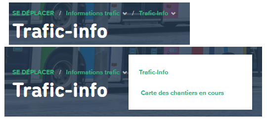Dans les pages intérieures (par exemple, Trafic Info), les items du fil d’ariane possèdent une fonctionnalité qui permet d’afficher les pages associées. Cette fonctionnalité ne peut pas être activée au clavier.
Autocomplétion
Les champs de saisie qui proposent des listes de résultats au fil de la saisie ne sont pas toujours accessibles aux utilisateurs qui ne perçoivent pas l’écran ou ne le perçoivent pas dans sa totalité. En effet, ils n’ont pas l’information que des résultats sont apparus par exemple, ou encore que la recherche ne retourne aucun résultat.
Constats sur le site
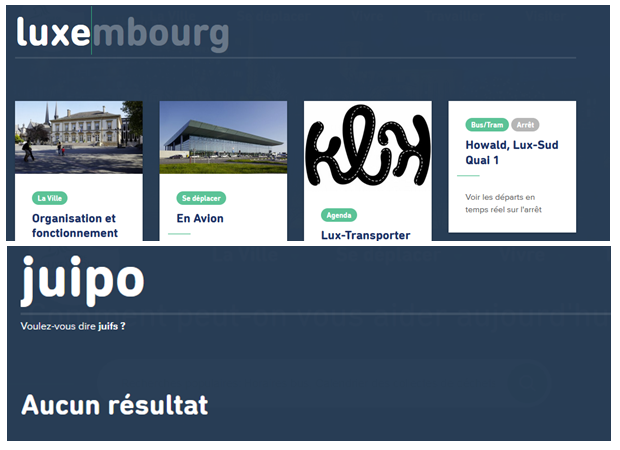Le moteur de recherche présent dans la modale possède un système d’autocomplétion qui n’est pas compatible avec les technologies d’assistance. Un utilisateur aveugle par exemple n’a pas conscience de l’apparition de la liste des résultats ou de l’absence de résultats suite à sa saisie. Une utilisation appropriée de régions live ARIA (role="alert", aria-live="polite" par exemple) ainsi qu’une gestion de focus minutieuse permettra de rendre ce composant accessible.
Carrousel
Constats sur le site
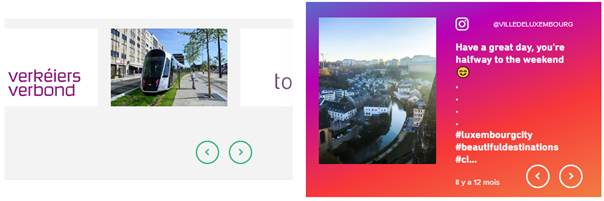Sur la page d’accueil notamment, on rencontre des systèmes de carrousel. La principale problématique de ces éléments est que les boutons de navigation (droite/gauche) sont positionnés après le contenu qu’ils permettent de gérer. Ils devraient être positionnés avant le contenu dans le code source. La spécification ARIA propose un motif de conception Carousel duquel il sera intéressant de se rapprocher pour effectuer les correctifs.
Message de statut
Les messages de statut concernent les messages d'alerte, de confirmation ou d'historisation. Dans tous ces cas, certains utilisateurs, par exemple les personnes aveugles ou les utilisateurs de loupe d’écran vocalisée, risquent de ne pas prendre connaissance de ces messages si leur restitution n'est pas contrôlée.
L'API ARIA propose plusieurs rôles spécifiques qui permettent de contrôler la restitution de ce type de message :
- Le
role="alert"pour les messages d'alerte ; - Le
role="status"pour les messages de confirmation ; - Le
role="log"pour les messages d'historisation.
L'utilisation appropriée de ces rôles va permettre de déclencher leur vocalisation dès qu'ils deviendront actifs (rendus visibles ou insérés dans le DOM).
Constats sur le site
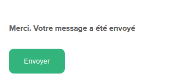Lorsque le formulaire de contact est envoyé avec succès, un message informant de cet envoi apparaît « Merci. Votre message a été envoyé ». Ce message est un message de statut, mais il n’implémente pas les propriétés adéquates pour être restitué.
Changement de contexte
Un changement de contexte est une situation où un utilisateur ne peut pas anticiper le fonctionnement d'une fonctionnalité lorsque celle-ci ouvre une nouvelle page, valide un formulaire ou ajoute ou modifie du contenu dans la page par exemple.
Cela concerne plus spécifiquement les fonctionnalités qui se lancent sans que l'utilisateur puisse les anticiper comme, par exemple, la soumission automatique d’un champ de formulaire sur la sélection d'un item ou lorsque l'utilisateur quitte un champ de saisie.
Constats sur le site
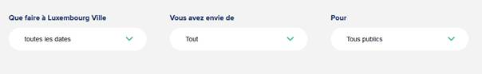Dans les pages Agenda, Actualités, Media Center et Trafic Info, le choix d’une option de liste déroulante lance automatiquement le rechargement de la page sans en avertir l’utilisateur. Dans ces cas, définir une étiquette qui explicite ce changement de contexte permet d’en informer l’utilisateur.
Éléments obligatoires
Recommandation
Vérifier que chaque page web a un code valide selon le type de document, un titre pertinent et une indication de langue par défaut. Vérifier que les balises ne sont pas utilisées uniquement à des fins de présentation, que les changements de langues et de direction de sens de lecture sont indiqués.
Titre de la page
Le titre de la page (visible dans l'onglet du navigateur) est un élément de repère dans le site web. Pour les utilisateurs de lecteur d'écran (utilisateurs aveugles ou grands malvoyants), c'est le premier élément restitué par le lecteur d'écran au chargement de la page. Cela permet de donner du contexte aux utilisateurs qui n'ont pas une vision globale de la page. Pour les utilisateurs avec des troubles de la mémoire, c'est l'information à laquelle ils accèdent lorsqu'ils naviguent avec l'historique de navigation du navigateur. Il est donc essentiel d'avoir des titres de pages pertinents, concis et très souvent uniques dans le site, et qui reflètent de la position de l'utilisateur dans le site web.
Il est des cas particuliers, comme les pages dont le contenu est une liste de résultats paginés (ex. : les résultats de recherche), pour lesquels le titre doit refléter la nature de la recherche ainsi que le numéro de page en cours de consultation.
Constats sur le site
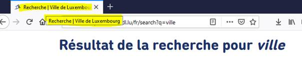Dans la page de recherche, le titre de la page ne reprend pas les termes recherchés.
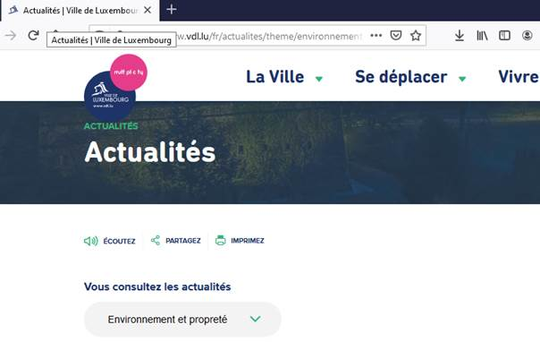Le titre de la page Actualités devrait reprendre le filtre sélectionné dans la liste « Vous consultez les actualités » et la pagination. On retrouve la même problématique pour les pages Agenda, Media Center et Trafic Info.
Indication de langue
Les lecteurs d'écran utilisent les indications de langue pour vocaliser le contenu dans la langue définie. La page doit contenir une définition de langue principale (généralement sur l'élément html).
Ensuite, les éléments de langue étrangère présente dans le contenu doivent être signalés. Si dans la page on trouve, des termes absents du dictionnaire de la langue principale de la page, il faut les identifier afin que le lecteur d'écran restitue dans la langue appropriée. En effet, une mauvaise prononciation pourrait mener à des incompréhensions pour les utilisateurs qui reposent uniquement sur des restitutions orales. Les noms propres sont exclus de cette obligation.
Constats sur le site
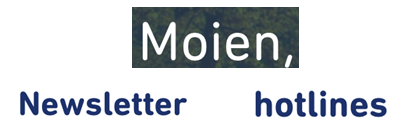On trouve quelques termes en luxembourgeois (« Moien ») ainsi que de nombreux termes en anglais (« Newsletter », « Hotlines ») dans la version française du site.
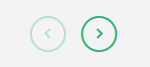Les intitulés de certains composants sont en anglais. C’est le cas par exemple des boutons de navigation des carrousels dont les intitulés sont « Next slide » « Previous slide ».
Validité du code
Les technologies d'assistances, comme les lecteurs d'écran ou les systèmes de contrôle à la voix, s'appuient sur le code des pages pour générer les restitutions et les interactions avec l'utilisateur. Un lecteur d'écran va exploiter le code HTML fourni par le navigateur et les informations accessibles au moyen des API d'accessibilité du système.
Si le code comporte des erreurs (balises mal fermées par exemple), il y a un risque que les fonctionnalités du lecteur d'écran soient impactées, comme la navigation de lien en lien par exemple.
Pour vérifier la conformité d'une page, vous pouvez utiliser le validateur mis à disposition par le W3C.
Constats sur le site
Le code source est relativement robuste dans l’ensemble du site. On constate quelques erreurs comme par exemple des valeurs d’identifiants
dupliquées : name, block-vdl-bottom-menu, block-vdl-bottom-menu-menu.
Balises utilisées à des fins de présentation
Les éléments de structure HTML ont chacun une sémantique particulière (paragraphe, titre, image, lien, etc.). Si les éléments sont mal employés (détournés de leur utilité première), cela peut poser des problèmes aux utilisateurs qui naviguent à l'aide d'une technologie d'assistance (lecteur d'écran, plug-in…). En effet, les technologies d'assistance mettent des raccourcis à disposition permettant de naviguer rapidement entre certains types d'éléments (paragraphes, titres, listes, etc.). Si ces éléments sont mal employés, les utilisateurs ne peuvent pas utiliser ces fonctionnalités de repère et de navigation dans le contenu.
Constats sur le site
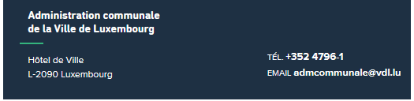Dans le pied de page, les éléments de contact (adresse, email, téléphone) ne sont pas structurés correctement avec des paragraphes.
Structuration de l'information
Recommandation
Utiliser des titres, des listes, des abréviations et des citations pour structurer l'information. S'assurer que la structure du document est cohérente.
Titres
Le titrage des contenus est une étape importante dans la structuration des contenus. Cela répond à deux besoins :
- identifier rapidement un contenu recherché ;
- naviguer rapidement dans le contenu en se déplaçant de titre en titre.
Un titrage correct fournit à l'utilisateur de lecteur d'écran un plan du document et lui permet de naviguer de titre en titre pour se déplacer plus rapidement dans le contenu de la page.
Pour valider la structure de votre page, vous pouvez utiliser l'extension Firefox HeadingsMap. Lorsque l'extension est active, sélectionnez l'onglet « Headings » et vérifiez la cohérence et l'imbrication des titres.
Constats sur le site
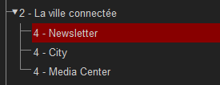Dans le bloc « La ville connectée », on constate une rupture dans la hiérarchie : le bloc utilise un titre de niveau 2 et les blocs qui en dépendent des titres de niveau 4. Ces titres devraient être de niveau 3.
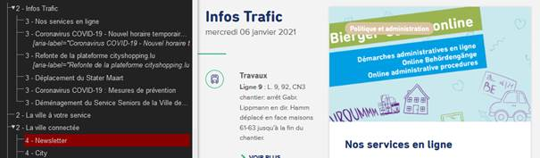Sur la page d’accueil, on constate un défaut d’imbrication des niveaux de titres. Les blocs « Infos trafics » et « Nos services en ligne » par exemple, sont deux blocs d’informations indépendants. Pourtant, « Infos trafic » utilise un titre de niveau 2 et « Nos services en ligne », un titre de niveau 3 alors qu’il n’y a pas d’imbrication entre ces contenus. Les titres de niveau 3 situés après « Infos trafic » devraient être de niveau 2.
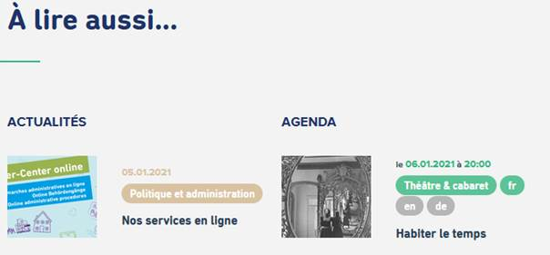Dans les pages intérieures (par exemple « Contact »), le bloc « A lire aussi » contient des sections identifiées par des textes comme « Actualités » ou « Agenda ». Ces textes structurent visuellement le contenu, mais ne sont pas identifiés comme des titres.
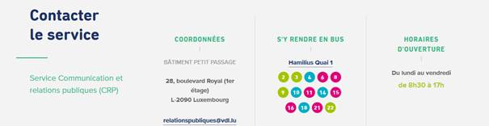Dans certaines pages intérieures, on rencontre un bloc « Contacter le service » qui n’est pas structuré. Les textes qui visuellement constituent des titres ne sont que des paragraphes : « Contacter le service », « Coordonnées », « S’y rendre en bus », « Horaires d’ouverture ».
Listes
La structuration en listes permet aux utilisateurs de lecteurs d'écran de consulter plus rapidement le contenu, grâce à des raccourcis spécifiques, et d'accéder directement à une liste ou de la passer sans avoir à en parcourir tous les items.
Constats sur le site
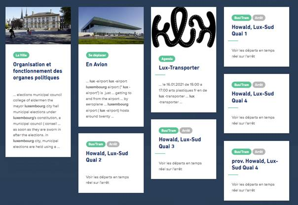Les résultats de la recherche (disponibles depuis la fenêtre modale de recherche) constituent une liste et devraient être structurés comme tels. On retrouve la même problématique dans la page dédiée des résultats de recherche.
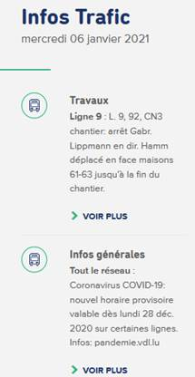Sur la page d’accueil, les items du bloc « Infos Trafic » constituent une liste d’informations, mais ils n’emploient pas la structure HTML appropriée.
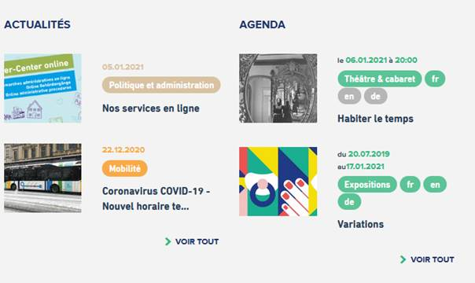Dans les pages intérieures, les items des blocs « Actualités » et « Agenda » sont des listes d’éléments, mais ne sont pas structurés avec les éléments appropriés.
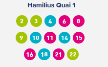Dans le bloc « Contacter le service », présent dans certaines pages intérieures (par exemple la page décrivant l’application VDL), l’ensemble des liens des lignes associées à un arrêt est une liste, mais n’est pas structuré avec les éléments appropriés.
Citations
L'absence de signalement des citations peut rendre le contenu plus complexe à comprendre pour les personnes aveugles et les grands malvoyants, et générer des ambiguïtés et des incompréhensions.
Constats sur le site
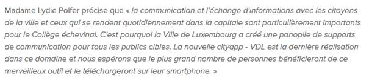Dans la page de présentation de l’application VDL, on rencontre un passage de texte qui est la citation d’une personne. Cette citation est mise en évidence visuellement par des guillemets et de l’italique, mais n’est pas identifiée dans le code.
Structure du document
L'utilisation correcte des balises HTML5 et des landmarks ARIA va permettre d'enrichir la restitution pour les utilisateurs aveugles qui ne perçoivent pas les mises en forme : la navigation principale ne sera plus perçue simplement comme une liste de liens, elle sera restituée à l'utilisateur comme un élément de navigation, par l'intermédiaire du lecteur d'écran qui annoncera « région » ou « repère ».
De plus, ces marqueurs sémantiques vont également constituer des éléments de navigation rapide dans la page. Grâce à un raccourci clavier, certains utilisateurs vont pouvoir naviguer plus rapidement entre les régions qui auront été ainsi identifiées.
Constats sur le site
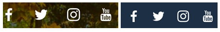Les listes de liens des réseaux sociaux que l’on retrouve en haut et pied de page ne sont pas des éléments de navigation dans le site, mais sont pourtant implémentées dans des balises <nav>.
Également en pied de page, la liste des liens « Luxembourg City Tourist Office, Presse, Réseaux et partenariats, Plan du site, Mentions légales » ne constitue pas un système de navigation dans le site, il s’agit juste d’un choix de liens. Cette liste ne devrait pas être insérée dans une balise <nav>.
Sur la page d’accueil, le contenu principal n’est pas
identifié par la balise <main role="main">.
Le lien d’accès rapide doit également être structuré dans une région, il est considéré comme un élément de navigation et doit être implémenté dans un élément <nav role="navigation">.
Présentation de l'information
Recommandation
Utiliser des feuilles de styles pour contrôler la présentation de l'information. Vérifier l'effet de l'agrandissement des tailles des caractères sur la lisibilité. S'assurer que les liens sont correctement identifiables, que la prise de focus est signalée, que l'interlignage est suffisant et donner la possibilité à l'utilisateur de contrôler la justification des textes. S'assurer que les textes cachés sont correctement restitués et que l'information n'est pas donnée uniquement par la forme ou la position d'un élément. S'assurer que les contenus sont lisibles et utilisables dans une fenêtre de largeur réduite. Veiller à ce que l'application de paramètres typographiques n'entraîne pas la perte de contenu ou de fonctionnalité. S'assurer que les contenus qui apparaissent au survol et à la prise de focus puissent être contrôlés par l'utilisateur.
Utilisation de CSS exclusivement
Certains utilisateurs qui présentent des troubles de la lecture (personnes dyslexiques par exemple), vont avoir besoin d'adapter la présentation des pages avec leurs propres mises en forme. Cela est possible sans difficulté si le site web utilise exclusivement les feuilles de styles CSS pour réaliser les mises en forme. Cependant, l'utilisation d'attributs et balises HTML de mise en forme rend ces adaptations plus compliquées, sinon impossibles.
Le RGAA donne la liste des attributs et balises qu'il est interdit d'utiliser.
Constats sur le site
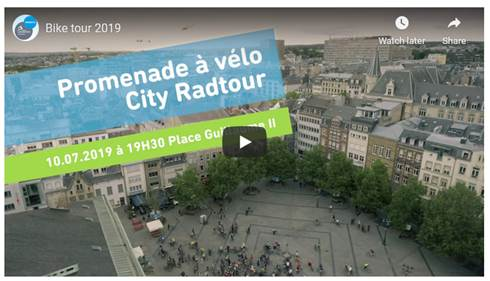On rencontre des attributs de mise en forme (frameborder, width, height) sur les cadres qui embarquent les vidéos, comme dans la page Promenade à vélo.
Couleur de police et couleur de fond des textes
De nombreux navigateurs permettent aux utilisateurs de choisir une couleur par défaut pour le texte et le fond, à utiliser sans avoir à modifier tous les styles spécifiés par l'auteur. Cela permet aux utilisateurs de visualiser des pages dont les couleurs n'ont pas été spécifiées par l'auteur dans leur combinaison de couleurs préférée.
Pour cette raison, si l'auteur du site a défini une couleur de police sans spécifier de couleur de fond associée, il est possible que le contraste résultant ne soit plus suffisant pour l'utilisateur.
Constats sur le site
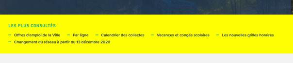Il manque une couleur de fond globale définie pour les pages. On peut le constater en paramétrant la couleur de fond du navigateur. Ici, on s’aperçoit que c’est le paramétrage de l’utilisateur qui s’applique puisque les feuilles de styles du site n’ont pas défini de couleur de fond pour cet élément.
Contenu compréhensible sans les styles : ordre visible vs ordre réel
Un utilisateur aveugle n'a pas accès à la mise en forme qui parfois est porteuse d'informations importantes, notamment des relations entre les éléments.
Il est important de ne pas implémenter les textes dans l'ordre visuel, mais bien dans l'ordre logique de dépendance et hiérarchie des éléments.
Le contenu doit rester compréhensible sans les feuilles de styles (vous pouvez tester vos contenus en désactivant les feuilles de styles).
Constats sur le site
Dans les blocs d’actualités de la page d’accueil, le tag et le titre sont situés dans le code source avant le titre auxquels ils réfèrent. Cet ordre illogique peut créer des confusions dans la compréhension des contenus pour les utilisateurs qui n’ont pas accès à la mise en forme.Le lien « voir » dans le bloc « Media center » fait référence à « Media Center » et devrait être positionné dans le code source après le titre. En l’état, le lien n’est pas explicite et un utilisateur aveugle peut ne pas comprendre sa fonction ou ne pas y accéder s’il navigue par éléments de titre.
Visibilité de la prise de focus
Les personnes avec un handicap moteur qui naviguent au clavier peuvent rencontrer des difficultés considérables à utiliser du contenu si elles ne sont pas en mesure de repérer l'indication visuelle du focus et ses déplacements.
Constats sur le site
La prise de focus n’est visible sur aucun des éléments interactifs du site. En effet, dans les feuilles de styles, on trouve une déclaration générique qui vise à supprimer l’outline natif géré par le navigateur outline:0.
Contenus cachés
L’utilisation de certaines propriétés va empêcher l’exploitation des contenus par les technologies d’assistance. C’est par exemple le cas de la propriété aria-hidden="true" qui n’altère pas la visibilité d’un élément, mais indique par contre aux technologies d’assistance d’ignorer le contenu associé. Cela implique qu’un utilisateur aveugle qui navigue avec un lecteur d’écran ne pourra pas en avoir connaissance ou encore qu’un utilisateur de commande vocale ne pourra pas activer les éléments interactifs qui y sont inclus.
Constats sur le site
Les liens des réseaux sociaux de pied de page sont masqués aux technologies d’assistance par la propriété aria-hidden="true".
C’est également le cas des liens en pied de page « Actualités, Agenda, Media center, Newsletter ».
Le bloc « Les plus consultés » de la page d’accueil est également masqué aux technologies d’assistance.
Largeur réduite
Il s'agit ici de tester la capacité des contenus à se réorganiser lorsqu'un utilisateur malvoyant doit réaliser un zoom graphique de 400%. À ce titre, on teste la lisibilité des contenus dans une fenêtre de largeur réduite à 320px.
On s'assure que l'utilisateur a accès à tous les contenus et que tous les contenus sont lisibles sans avoir recours à la barre de défilement horizontale.
Constats sur le site
Certaines catégories, comme « Politique et administrations » ou « Environnement et propreté » sont coupées sur la page d’accueil, sur la page Actualités ou encore sur la page Article.
Certains liens de la page « Plan du site »sont tronqués, par exemple : « Projets d’aménagements général », « Projets d’aménagements particuliers ».
Contenus additionnels au survol et au focus
Les contenus additionnels qui apparaissent au survol ou à la prise de focus (par exemple, un menu déroulant, une infobulle d'information), peuvent être contrôlés par l'utilisateur. Par exemple, les utilisateurs malvoyants utilisateurs de loupe d'écran peuvent déclencher l'affichage accidentel des contenus qui apparaissent au survol et ces affichages non désirés perturbent la consultation pour ces utilisateurs. L'utilisateur doit alors disposer d'un moyen simple pour les masquer et continuer sa consultation.
Également, en utilisant une loupe d'écran, il est probable que le contenu additionnel soit en fait apparu en dehors de la zone de zoom de la loupe, l'utilisateur doit pouvoir survoler le contenu additionnel à la souris.
Enfin, il faut s’assurer en premier lieu que les éléments qui sont rendus visibles au survol puissent être rendus visibles également au clavier, à la prise de focus.
Constats sur le site
Les liens de partage, disponibles depuis l’élément « Partagez » dans les pages intérieures, ne peuvent pas être rendus visibles au clavier. Un utilisateur qui navigue exclusivement au clavier ne pourra ni les afficher ni les atteindre. Puisque ce contenu additionnel ne vient pas masquer un autre contenu, il n’est pas nécessaire de fournir à l’utilisateur une méthode pour le masquer.
Formulaires
Recommandation :
Associer pour chaque formulaire chacun de ses champs à son étiquette, grouper les champs dans des blocs d'informations de même nature, regrouper les items de même nature dans les listes de choix, donner à chaque bouton un intitulé explicite. Vérifier la présence d'aide à la saisie, s'assurer que le contrôle de saisie est accessible et que l'utilisateur peut contrôler les données à caractère financier, juridique ou personnel.
Étiquettes et champs
Les champs de formulaires doivent tous posséder des étiquettes correctement reliées.
Une étiquette de champ est un texte situé à proximité du champ de formulaire qui permet de connaître la nature, le type ou le format des informations attendues.
De cette manière, lorsqu'un utilisateur entre dans le champ de saisie avec un lecteur d'écran, le lecteur d'écran lit le contenu de l'étiquette. L'utilisateur comprend alors ce qu'il doit saisir.
Sans cela, même si une étiquette est présente visuellement, l'utilisateur entendra « champ de saisie vide » en entrant dans le champ et ne saura donc pas quoi saisir.
Constats sur le site
Le champ de recherche disponible dans la fenêtre modale ne possède pas d’étiquette correctement reliée. Le texte en grisé lisible dans le champ (placeholder) n’est pas considéré comme une étiquette accessible.

Sur la page d’accueil, le champ de recherche ne possède pas d’étiquette accessible non plus.
Dans la page Contact, on rencontre un autre problème : l’étiquette « Vous souhaitez vous adresser à quel service ? » est en fait reliée au champ email. Le champ de choix du service n’a alors pas d’étiquette et le champ email une étiquette non pertinente.
Dans la page Info Trafic, lorsque le champ « Filtrer par date à partir du » reçoit le focus, une propriété aria-label est ajoutée qui vient remplacer l’étiquette visible par un autre contenu, pour les utilisateurs de lecteurs d’écran. Ces derniers auront accès à une étiquette en anglais qui ne donne pas la donnée attendue : « Use the arrow keys to pick a date »
Intitulés de bouton pertinents
Les boutons qui permettent d'interagir avec les formulaires doivent avoir des intitulés pertinents pour que l'utilisateur comprenne l'action du bouton.
Ces intitulés sont essentiels pour les personnes aveugles, afin qu'elles soient sûres de l'action qu'elles s'apprêtent à réaliser.
Constats sur le site
Sur la page d’accueil, le bouton d’envoi du formulaire de recherche n'a pas d'intitulé. Pour un utilisateur aveugle qui utilise un lecteur d’écran, la fonction de ce bouton ne sera pas indiquée et l’utilisateur ne pourra pas connaître la fonction.
Contrôle de saisie et aide à la saisie
Tous les champs obligatoires doivent être identifiés préalablement à toute validation de l’utilisateur.
Pour les champs qui attendent un format de saisie particulier pour être validés, ce format doit être spécifié à l’utilisateur par un passage de texte visible à proximité du champ. De plus, si l’utilisateur commet une erreur sur ce champ, alors le message d’erreur doit présenter un exemple réel de saisie.
Enfin, les messages d'erreur de saisie des champs de formulaire doivent être liés correctement aux champs en erreur.
Constats sur le site
Dans le formulaire de contact, les champs obligatoires sont identifiés par un caractère « * », mais la signification de celui-ci n’est jamais définie dans le formulaire.
Dans le formulaire de contact, le champ « email » attend un format particulier qui n’est jamais spécifié à l’utilisateur. De plus, le message d’erreur ne fournit pas d’exemple réel de saisie.
Identification des données attendues
Certains utilisateurs qui ont des troubles d'accès au langage verbal (paralysie cérébrale, aphasie par exemple) auront des difficultés à accéder au sens des termes écrits. Ainsi, pour leur permettre de remplacer les étiquettes présentes dans les formulaires par des étiquettes (verbales ou imagées) qu'ils connaissent, il est nécessaire d'identifier les champs avec un attribut particulier, de sorte qu'une technologie d'assistance pourra réaliser la personnalisation du formulaire nécessaire à l'utilisateur.
L'identification de ces champs permet également aux utilisateurs d'employer des outils pour remplir automatiquement les champs identifiés avec des valeurs de l'utilisateur.
On ne va rechercher que les champs qui attendent une donnée personnelle. Le RGAA demande d'utiliser l'attribut autocomplete et il fournit l'ensemble des valeurs possibles pour l'attribut.
Constats sur le site
Dans le formulaire de contact, les champs nom, prénom, adresse email, téléphone, adresse, code postal, localité ne sont pas identifiés avec l’attribut autocomplete.
Navigation
Recommandation :
Faciliter la navigation dans un ensemble de pages par au moins deux systèmes de navigation différents (menu de navigation, plan du site ou moteur de recherche), un fil d'Ariane et l'indication de la page active dans le menu de navigation. Identifier les groupes de liens importants et la zone de contenu et donner la possibilité de les éviter par des liens de navigation interne. S'assurer que l'ordre de tabulation est cohérent et que la page ne comporte pas de piège au clavier. S'assurer que les raccourcis clavier qui utilisent une seule touche sont contrôlables par l'utilisateur.
Systèmes de navigation
Le RGAA demande qu'un site propose au moins deux systèmes de navigations différents. Prévoir deux systèmes de navigation au moins est important, car :
- tous les utilisateurs ne naviguent pas de la même manière ;
- certains systèmes de navigation peuvent s'avérer trop complexes à utiliser, en particulier pour les personnes qui ont recours à des technologies d'assistance. Par exemple, un menu de navigation trop riche, comme un méga-menu, peut nécessiter beaucoup d'actions pour un utilisateur qui navigue exclusivement au clavier, et donc rendre sa recherche d'information très laborieuse.
Par systèmes de navigation, on entend tout procédé permettant une navigation dans le site ou dans une page, parmi :
- un menu de navigation principal ;
- un plan du site ;
- un moteur de recherche.
Note : un moteur de recherche est considéré comme un moyen de navigation s'il indexe toutes les pages du site (y compris les pages de type « Mentions légales » ou « Politique de confidentialité »), et non pas seulement un choix limité (par exemple, seulement les offres tarifaires).
Le plan du site, s’il est présent, doit être représentatif de l’arborescence du site et ne proposer que des liens fonctionnels.
Constats sur le site
Le plan du site possède des liens qui renvoient vers des pages en erreurs (404). C’est par exemple le cas du lien « Nuits blanches » ou encore la plupart des liens de la section Cinémathèque. Tous les liens du plan du site doivent être fonctionnels.
Landmarks ARIA
Pour fournir des points de repère aux utilisateurs aveugles, il faudra également implémenter les landmarks ARIA sur les balises HTML 5 de la page.
Constats sur le site
La liste des changements de langue possède le role="navigation" alors qu’il ne s’agit pas d’un système de navigation.
Ordre de tabulation
La navigation dans les contenus peut être considérablement compliquée pour les personnes aveugles ou les personnes handicapées motrices qui naviguent au clavier si l'ordre de tabulation n'est pas cohérent.
L'ordre de tabulation est déterminé par l'ordre des éléments dans le code HTML. Il ne suit pas forcément l'ordre de lecture de la page ou de l'écran, mais il doit être cohérent en fonction de la nature des contenus et des fonctionnalités.
Constats sur le site
Lorsqu’une des entrées de menu est activée et le sous-menu déployé, le focus est positionné automatiquement sur la seconde liste de liens. Ainsi, le contenu situé avant, le bloc « Accès rapide », ne sera certainement pas découvert par les utilisateurs aveugles.
Consultation
Recommandation
Vérifier que l'utilisateur a le contrôle des procédés de rafraîchissement, des changements brusques de luminosité, des ouvertures de nouvelles fenêtres et des contenus en mouvement ou clignotants. Ne pas faire dépendre l'accomplissement d'une tâche d'une limite de temps sauf si elle est essentielle et s'assurer que les données saisies sont récupérées après une interruption de session authentifiée. Proposer des versions accessibles ou rendre accessibles les documents en téléchargement. S'assurer que la consultation n'est pas dépendante de l'orientation de l'écran. Toujours proposer un geste simple en alternative d'un geste complexe permettant de réaliser une action.
Documents en téléchargement
Assurez-vous que chaque document soit accessible (cf. les Guides de créations de documents bureautiques accessibles), ou qu'il dispose d'une alternative accessible proposant le même contenu (par exemple, une version HTML correctement structurée).
Constats sur le site
Le magazine de la ville « City » est au format pdf et présente un certain nombre d’erreurs d’accessibilité, notamment une absence totale de structuration sémantique (pas de titres ou de listes par exemple).
Dans la page Media Center qui rassemble les documents, on trouve de nombreux PDF. Ceux évalués dans le cadre de l’audit présentent des erreurs d’accessibilité, comme : des contrastes de textes en défaut, un ordre de lecture des contenus par les lecteurs d’écran illogique.
Gestes complexes
Certaines personnes handicapées motrices ne peuvent pas réaliser de gestes complexes, elles utilisent généralement des technologies d'assistance qui leur permettent d'interagir uniquement avec un geste simple comme cliquer sur un bouton par exemple.
Dans ces situations il est indispensable que le site ou l'application propose pour chaque fonctionnalité basée sur un geste complexe une alternative au moyen d'un geste simple.
Le geste complexe nécessite l'utilisation d'un contact multipoint comme par exemple utiliser deux doigts pour zoomer ou dézoomer ou tracer une trajectoire.
Le geste simple peut être un contact sur un seul point ou toute variation multiple de ce contact (double clic, etc.).
Constats sur le site
Dans le bloc « Réseaux et partenariats » sur la page d’accueil en version mobile, le carrousel n’est consultable qu’avec l’utilisation d’un geste de swipe (glisser de droite à gauche). À noter que dans la version de bureau (écran large), des flèches sont mises à disposition pour faire défiler le carrousel, ce qui constitue alors une alternative (geste simple).